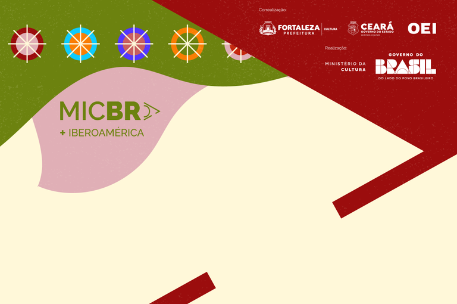

Fonte: GOV.
O Norte brasileiro marca presença no Mercado das Indústrias Criativas do Brasil (MICBR) +Ibero-América 2025 por meio de seus 48 selecionados. Os participantes desta edição, sendo 13 novos e 35 sêniores, vão representar a diversidade, a força e o potencial econômico de um território profundamente conectado à natureza e às tradições ancestrais da região.
Para a ministra da Cultura, Margareth Menezes, os brasileiros podem aprender com a forma dos nortistas em empreender e cuidar do planeta. "A presença do Norte no MICBR+Ibero-América é um lembrete de que a Amazônia é tão criativa quanto é biodiversa. O Brasil tem muito a aprender com essa forma de criar a partir do território, com respeito à natureza e conexão com o mundo".
"O MICBR é o lugar onde os empreendedores nortistas mostram que a economia criativa que produzem nasce da floresta, dos povos ancestrais e de práticas sustentáveis que hoje inspiram o mundo", acrescenta a secretária de Economia Criativa do MinC, Cláudia Leitão.
A economia criativa da região tem como alicerce a riqueza da biodiversidade amazônica e o protagonismo de povos originários, comunidades ribeirinhas e quilombolas, que há séculos desenvolvem formas próprias de expressão, produção e convivência com o meio ambiente. Essa base cultural e ecológica singular se traduz em produtos e experiências que integram arte, design, gastronomia, moda, música, audiovisual e bioeconomia, apresentando uma economia que valoriza o território e respeita seus ciclos naturais.
As iniciativas da região destacam o uso de matérias-primas da floresta de forma responsável, o resgate de técnicas tradicionais de produção artesanal e a incorporação de inovações tecnológicas e digitais para ampliar mercados e gerar renda.
A empreendedora Cristiane Maria Pires Martins, da marca Amazônia Ancestral, chega ao Mercado com uma proposta singular: unir arqueologia, ciência e ancestralidade em peças que registram materialmente a estética amazônica. "A Amazônia é abundante em expressões e materialidades. Meu design nasce da pesquisa arqueológica e antropológica; é a junção entre arte e ciência em forma de moda", explica.
Cristiane trabalha com redes locais de colaboradoras e materiais de reaproveitamento, com foco em madeira e outros resíduos transformados em design. Ela vê no evento uma plataforma crucial para ampliar circulação e reconhecimento. "Eventos como o MICBR dão voz a marcas que não conseguem acessar o mercado nacional. O futuro da moda brasileira precisa ser plural e incluir quem cria fora do eixo Sul–Sudeste", defende.
Para Ivan Teixeira Leal, do Miriti Pará, a palavra de ordem do MICBR+Ibero-América é difusão. Ele levará para esta edição um dos artesanatos mais emblemáticos da Amazônia: esculturas feitas com o pecíolo do miriti, trabalhado à mão com faca, técnica transmitida há gerações. "O miriti é uma tradição centenária. É único no Brasil, feito apenas na nossa região", enfatiza. Para ele, o maior temor é que a tecnologia desestimule novos artesãos. E completa: "o evento traz visibilidade e abre portas para negócios que ajudam nossa técnica a não desaparecer".
A ancestralidade e a biodiversidade se encontram com as novas economias em uma combinação que expressa o espírito contemporâneo da região: criar a partir do que é local, com impacto global. Mais do que participar do mercado, os representantes do Norte trazem ao MICBR+Ibero-América uma visão de futuro baseada em conexões entre cultura, natureza e inovação, elementos que fazem da Amazônia um polo estratégico da economia criativa brasileira.
Assim, a presença nortista no MICBR+Ibero-América 2025 firma o papel da região como guardiã de saberes e inspiração para novas formas de produzir e viver da criatividade, com equilíbrio entre desenvolvimento econômico, diversidade cultural e sustentabilidade ambiental.
MICBR+Ibero-América
Realizado em Fortaleza (CE), de 3 a 7 de dezembro, o MICBR+Iberoamérica combina atividades de formação — mentorias, oficinas, palestras e mesas redondas — com oportunidades de negócios, como rodadas, apresentações de projetos, showcases e momentos de networking. A iniciativa celebra a força da cultura brasileira e reafirma o papel estratégico da economia criativa no desenvolvimento sustentável, na integração regional e na valorização da diversidade cultural.
A edição 2025 é uma realização do Ministério da Cultura, correalização da Organização de Estados Ibero-Americanos para a Educação, a Ciência e a Cultura (OEI), do Governo do Estado, por meio da Secult Ceará, e Prefeitura de Fortaleza, por meio da Secultfor.